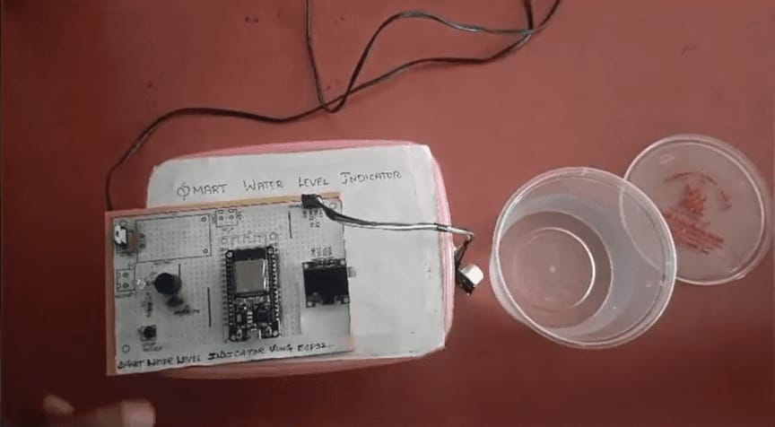
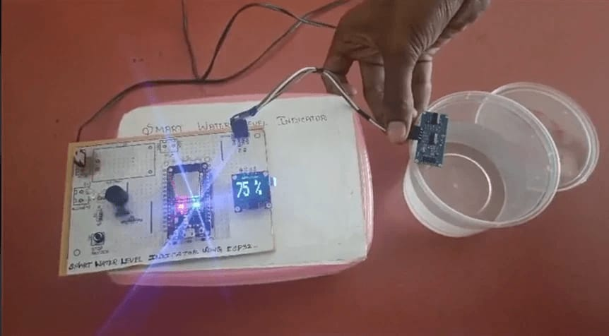
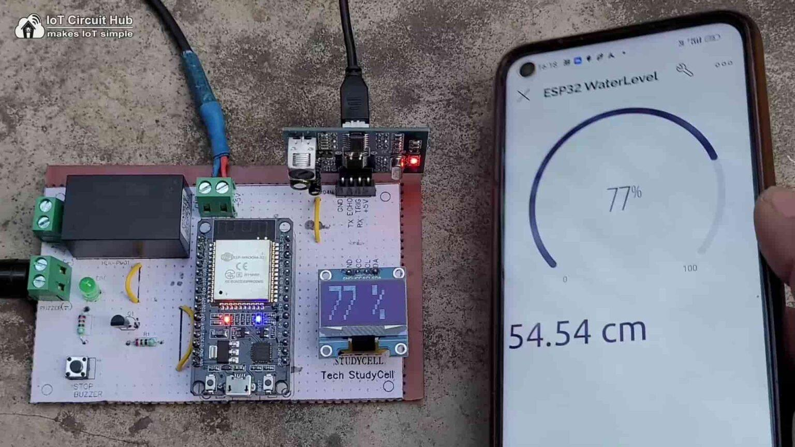

PROJECT 04
Smart Water Level Indicator
A microcontroller-based water level monitoring system designed to measure the water level in a tank using ultrasonic sensing technology and provide level indications to the user.
Project Gallery



Project Overview
The Smart Water Level Indicator is designed to monitor the amount of water available inside a tank. An ultrasonic sensor measures the distance between the sensor and the water surface. The microcontroller processes the measured distance and determines the corresponding water level. The system helps users monitor the tank level and reduces the need for frequent manual checking.
Project Objective
The main objective is to develop a simple and efficient water level monitoring system using ultrasonic sensing technology. It aims to provide convenient water level indication, help prevent water overflow and support better water management.
Working Principle
01. Ultrasonic Sensing
The ultrasonic sensor sends sound waves towards the water surface.
02. Distance Measurement
The sensor receives the reflected waves and measures the distance between the sensor and the water surface.
03. Data Processing
The microcontroller processes the distance measurement and calculates the water level.
04. Level Indication
The system indicates the water level to the user through its configured display or indication method.
Water Level Monitoring
Low Level
Indicates a low water level.
Medium Level
Indicates a medium water level.
High Level
Indicates a high water level.
Key Features
- Ultrasonic sensor-based water level measurement
- Microcontroller-based processing
- Continuous water level monitoring
- Clear water level indication
- Helps reduce water overflow
- Simple and user-friendly design